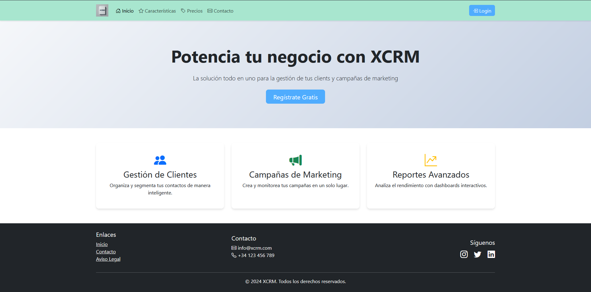

Antonio Águila
Desarrollador Web
Proyectos
xcrm
XCRM es una aplicación web en la nube que ayuda a las empresas a gestionar contactos, tareas y campañas de forma sencilla y accesible desde cualquier dispositivo. El proyecto lo desarrollé en equipo con dos compañeros, lo que me permitió trabajar de forma coordinada y repartir responsabilidades.
Mi aportación se centró en la mejora de la experiencia de usuario: desarrollé el formulario de contacto con envío de correos, validación de archivos y subida desde ordenador o Dropbox. También trabajé en el diseño visual, la personalización de perfiles y funcionalidades que permiten usar el sistema sin necesidad de registrarse.
En el área de campañas, desarrollé la funcionalidad que permite editar las campañas antes de su lanzamiento, y añadí la visualización detallada de los clientes asociados, lo que facilita una gestión más contextualizada y personalizada. Además, me ocupé de la gestión segura de datos y de garantizar su trazabilidad.
Conocimientos
- Desarrollo con HTML5, CSS3 y Bootstrap
- Programación orientada a objetos con Java
- Gestión de bases de datos con MySQL
- Control de versiones con Git
Habilidades
- Resolución lógica de problemas
- Trabajo colaborativo en equipo
- Adaptabilidad a nuevas tecnologías
Formación
FP Superior DAM - Alonso de Avellaneda, Alcalá de Henares
Experiencia
Técnico Informático Irium soluciones y sistemas S.L (Julio 2024 - Septiembre 2024) Apoyé en el proceso de sustitución de teléfonos móviles, realizando la transferencia de datos y configuraciones para garantizar su correcto funcionamiento.
Técnico Informático Tempo Intermezzo S.L. (Octubre 2016 - Junio 2020) Apoyé en el mantenimiento de equipos, configuración de redes y resolución de incidencias técnicas para asegurar el buen funcionamiento de los equipos informáticos.